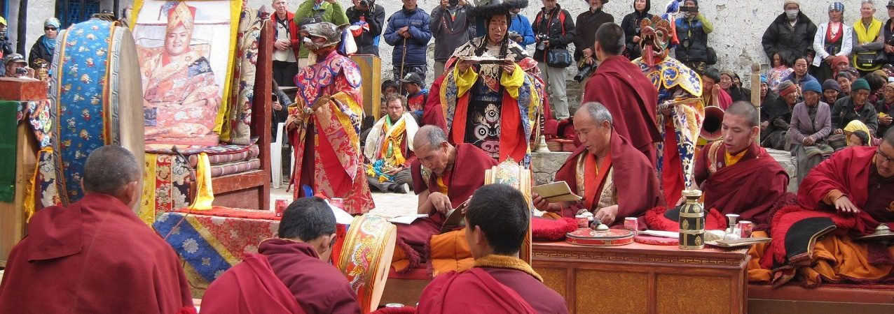

Nepal is a country of shocking natural beauty and immense spiritual kindness.Coming to Nepal is coming to an experience that is only yours. From the remotest corners to the urban landscape, Nepal embodies a sensory experience of colours, sounds, sights and tastes. Visit Nepal welcomes you to life’s amazing moments.
Welcome visitors to celebrate the year 2020 which is chosen as national tourism year of Nepal after the year 2011 which was the primary authority tourism year of new Federal Democratic Republic of Nepal. The government and tourism department of Nepal authoritatively reported that Nepal will take year 2020 as "Visit Nepal 2020", a year committed to tourism industry of Nepal with vision of making a reasonable brand picture of Nepal as travel and vacationer destination, backing up the tourism foundations of Nepal, enhance the growth of tourism industry, and enhance locale tourism as supportable industry. The legislature has wanted to accommodate more than one million visitors amid the year of “Visit Nepal 2020”.
Journey Within
Nepal can be a journey of true self discovery. The smell of incense, prayer flags in the wind, the chime of distant bells, butter lamps, the rotation of prayer wheels and mystical chants permeate centers of spiritual learning, monasteries and temples.
The birthplace of Buddha and the abode of Shiva, Nepal is a divine experience. Meditation, yoga, a temple stay or a spiritual sojourn, it draws believers and free thinkers alike,
With eight of the world’s highest mountains in the country, Nepal is a mountaineer’s paradise. The ultimate glory of mountaineering is reaching the summit of Mt. Most expeditions wouldn’t go up without the loyal, hardy and extremely reliable sherpas.
Expeditions into those areas require a totally different approach, level of commitment and organizational ability to achieve success on their chosen summit..
Developing tourism in the remote corners of the country with community based tourism approach for equitable distribution and development benefits, boost economic activity and protect culture, tradition and heritage.Culture of Nepal Nepal was declared a secular country by the Parliament on May 18, 2006. Religions practiced in Nepal are: Hinduism, Buddhism, Islam, Christianity, Jainism, Sikhism, Bon, ancestor worship and animism. The majority of Nepalis are either Hindus or Buddhism. The two have co-existed in harmony through centuries.
 Customs and traditions differ from one part of Nepal to another. A conglomeration lies in capital city Kathmandu where cultures are blending to form a national identity. Kathmandu Valley has served as the country’s cultural metropolis since the unification of Nepal in the 18th Century. A prominent factor in a Nepali’s everyday life is religion. Adding color to the lives of Nepalis are festivals the year round which they celebrate with much pomp and joy. Food plays an important role in the celebration of these festivals.